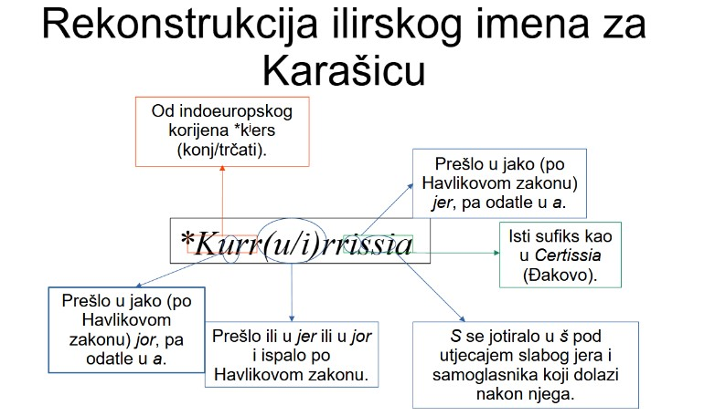

My Interpretation of the Croatian Toponyms
UPDATE on 27/04/2023: I have opened a forum thread about this on Linguistics StackExchange and on r/etymology.

The Salt Lake
on the Mljet Island.
It's sometimes suggested
that the islands
were once the places richest
in toponyms, because people
had to use
every single source of
fresh water and every single
piece of fertile land.
ATTENTION: Some of the opinions stated in the following text are contrary to the mainstream science. I will not advise you to read it if you don't have a substantial background in linguistics. I am not a conspiracy theorist who wants to bombard people with controversial statements they don't know how to evaluate, and I am not denying it is possible my work is to historical linguistics what Anatoly Fomenko's work is to history. If you are ready to read it, click here.
SUMMARY: It will be argued that it is impossible that the Illyrian language died out in ancient times, as the mainstream historical linguistics claims, but that it is nearly certain that it, despite never being attested, died relatively recently and that many, if not most of the, Croatian toponyms come from it. The main argument for that is that, if the toponyms came from the Croatian language, most of them would make sense to those who speak Croatian, yet the vast majority of them don't. Alternative etymologies are proposed for around 100 toponyms in or on the borders of Croatia. Some basic vocabulary of Illyrian is reconstructed, the most certain words are: *issa~iasa, meaning "source of a health-giving water", presumably coming from the Indo-European root meaning "boiling" or "spring", *karr~kurr, meaning "to flow", presumably from a Pre-Indo-European substrate language and cognate to the Late Latin fish names "carpa" and "carassius" (UPDATE on 12/01/2024: I've asked a StackExchange question about the possibility that "carpa" and "carassius" come from the Illyrian word for "to flow".), *kull~kl meaning "mountain", presumably from the Indo-European root meaning "high", *mar~mur, meaning "marsh", almost certainly from the Indo-European root meaning "marsh" or "sea", *api, meaning "water", from the Indo-European root meaning "body of water", the word *pis~pik meaning "coniferous forest", almost certainly related to the Latin word "pix" (resin), and the word *melit~malit, meaning "sea island", probably of Pre-Indo-European origin. The evidence for the root *karr~kurr is considered by the author to be the most firm, since the pattern of it appearing in Croatian river names has a p-value of at most around 1/500 5.9% (see the correction for more details). The evidence is consistent enough that some grammatical features of Illyrian can also be inferred, such as the /a/~/u/ ablaut. My conclusion is that Illyrian was a centum Indo-European language with some specific sound changes, such as *bh turning to /p/ in some conditions (perhaps only before 'a') and into /β/ (voiced bilabial fricative) in others, *kj turning to /j/ (the semi-vowel) in front of a nasal, *gj turning into /x/ (velar fricative) in at least some conditions, *kw turning into /k/, single consonants being geminated after a short vowel (presumably because all the syllables had to be of equal length), the diphthongs *ew and *ey monophthongized into long /i/, syllabic consonants turning into /i+C/, the initial laryngeals being preserved as /e/ (presumably because of a word-initial accent), in the later stages of Illyrian (when Illyrian names and words were attested in historical documents), 'e' turning to 'i' in front of 'r'+consonant and, in the last stages of Illyrian (as evident from some names borrowed into Croatian from Illyrian), simplification of consonant clusters into geminate consonants ('rb'>'rr' and 'nd'>'nn'). The reconstructed grammar is then exemplified by translating the Lord's Prayer into Illyrian.
Croatian is a Slavic language. However,
I think there aren't actually that many Slavic toponyms in Croatia.
If there were, they would make sense to those who speak Croatian, and
the vast majority of them don't. Many of the toponyms commonly accepted
to be Croatian in origin don't even sound (phonotactically) Croatian,
such as Delnice (the cluster -eln-, in native Croatian words,
the 'l' in -iln- and -eln- gets vocalized into 'o',
such as in "čeoni", derived from "čelo", or "dionica", derived from
the verb "dijel-i-ti").
Furthermore, there are statistically significant patterns in the names of places in Croatia which Croatian language cannot explain. For instance, the first two consonants in river names tend to be k and r, respectively. And the probability of such a pattern occurring by chance is, if my measurements and calculations are correct, somewhere between 1/300 and 1/17. I don't think it is speculation to say both that that pattern is statistically significant and that proponents of mainstream interpretation of the Croatian toponyms need to claim it is coincidental (See what Dubravka Ivšić, probably the greatest expert in Croatian toponyms today, said in response to my paper about that k-r pattern in the Croatian river names.).
So, I argue that attempts to explain
the Croatian toponyms without an obvious etymology with Slavic roots
is, in fact, a very flawed method (you can read more about why I think so here), and I attempt to reconstruct a
language of the ancient Croatian toponyms (the Illyrian language) and
explain the toponyms using it.
To give you an example, Issa, the
ancient name for the island of Vis, isn't explicable by Latin or
Greek, and is widely stated to have an unknown, perhaps
Pre-Indo-European etymology. But here is a clue: there were some
quite strong springs there in ancient times, that the Roman baths were
getting water from. Those springs were on the western side of the thermae,
and they dried out completely in the middle of the 20th century (you can read
more about ancient thermae on Vis in the
Branimir Gabričević'es dissertation
on page 28). And wherever there were large Roman baths in
Croatia, the same or similar element repeats. The ancient name for
Daruvar was Balissa and the ancient name for
Varaždinske Toplice was Iasa. There
we have it: *issa~iasa meant "spas" (health-giving springs). And I believe I can
trace that name back to Proto-Indo-European: it probably comes from
*yos (spring, derived from *yes, "to boil") and the collective noun
ending *eh2 (probably pronounced "ah"). The Bal- in Balissa
can be explained as being related to the Latin word bullire (to boil), so that
Balissa means "boiling health-giving springs". Using that knowledge,
we can explain some modern Croatian toponyms without an obvious Croatian
etymology, like Jozinci (assuming an ancient name such as *Iasona,
meaning "on the health-giving spring", in the sense "on the source of salt water",
since salt was believed to have health-giving properties by people of ancient Slavonia).
Namely, Jozinci is a small village near Donji Miholjac. It's known that, in ancient times,
there was a stream of brackish water flowing through Donji Miholjac, but it's
not certain where its source was. It might have very well been in Jozinci
(show/hide details).
By far the most common counter-argument I get is that, if a toponym doesn't come from Croatian, perhaps it comes from some other attested language, the most commonly proposed being Latin. Most of the such proposed etymologies can be easily refuted, click here to see (or hide) how.
Here is a list of
the etymologies of the Croatian toponyms I've supported on the
"Croatian Toponyms" thread linked on the left:
Aenona
(Nin) < *h2ekj-mon (where a lot of stones
are)
Albona (Labin) < *h2elbh
(white). It's unknown what the precise pronunciation of 'b' was, some sources spell it as 'v'. It might have been /β/.
Alma (Fruška Gora) < *h2elm
(fertile)
Almissia (Omiš) < *h2elm-yess (on a
fertile ground)
Andautonia (Zagreb) < *h2en-dheh2-ont-om
(near that which flows). The name Zagreb itself probably means "the God's hill", from the Illyrian word Dzis (God), mentioned on the Messapian inscriptions, and a word related to Proto-Slavic *gora and Sanskrit giri. So, the Illyrian name might have been *Dzigurevos, borrowed into Old Croatian via Vulgar Latin.
Apševci < from an Illyrian name (borrowed directly from Illyrian, not via Vulgar Latin) such as *Apissios, meaning "river island", derived from the Indo-European root *h2ep (water), for the semantics compare the Croatian toponym Otok near Vinkovci. Similar names occur repeatedly in microtoponymy, for instance, near Donji Miholjac there is a field called Apšaldol.
Arsia (Raša river) < *h3rews
(to flow fast)
Asinium (Sinj) < related to Proto-Slavic *asenŭ (ash tree). Or, perhaps even more likely, related to the Hittite word haš (stone), since the same element repeats in the names of other stony places. For instance, the ancient name for Osor was Assarum. I have asked a question on Quora what people think about my idea that the names Sinj and Senj are related.
Balissa (Daruvar) < *boll-yos-eh2
(where a lot of health-giving boiling springs are)
The only interesting objection I got to that etymology (as well as to my etymoligies of Issa and Iasa) is "Given that there are many Celtic toponyms in which -issa is a suffix, don't you think it is way more probable that -issa in Balissa is a suffix, rather than that it is a compound word?". And if we knew nothing about the Proto-Indo-European phonotactics, perhaps that would be a good objection. But we have very good reasons to think Proto-Indo-European phonotactics didn't allow geminate consonants, so that the suffix -issa couldn't have existed in Proto-Indo-European. So it doesn't make a lot of sense to suppose that the Celtic suffix -issa existed in Illyrian.
Baranja <
some sort of derivation from *mory (marsh), compare also Greek
βορβορος and the ancient (almost certainly Illyrian) name for the river Bojana, "Barbanna" (attested by Titus Livius in Historia Romana in the 44th book and the 31st chapter). The Illyrian name might have been *Barrania, with the first 'a' stressed and long, compare the ancient name for Dinara, "Dindaria" (while the modern name looks like as if it was from *Dinnaria), for the consonant cluster, in this case -rb- to -rr-, simplification.
Biđ (the river) < From an Illyrian name such as *Vōdios, from Proto-Indo-European *wed (wet), borrowed into Old Croatian from Vulgar Latin (therefore, 'v' regularly being borrowed as *b, long 'o' as *y, turning into 'i' in Modern Croatian, and 'di' regularly yotated into 'đ'). Alternatively, I don't know much about Germanic languages, but I speculate it may be possible that the name "Biđ" is of Germanic origin, related to English word "beach", which used to mean "stream" in Old English ("bæce").
Basante, Basuntius (Bosut) < *bel-sewh1-nt (strong
waterer), see "Sutla" and "Sunja" for the sound changes. Modern name obviously comes from the name Basante (attested on Tabula Peutingeriana), rather than Basuntius (attested by Pliny the Elder in the 3rd book in the 28th chapter of Naturalis Historia), it's hard to tell what was the relationship between those two names in antiquity. I'd argue that Basuntius is more original, and that Basante is some form of folk etymology.
Belgrade (the capital city of Serbia) < Mainstream linguistics derives the name Belgrade from Serbo-Croatian for white city. However, I think it is possible, if not probable, that it is a folk etymology, and that the correct reading is city on a hill. Consider the name of the city Beli Manastir in eastern Croatia. It seems to come from Croatian for white monastery, but that is a folk etymology. In many historical sources, it was written as Pelmonostor. It is unclear what the word pel meant. Some speculate it could be a word for hill, but, even so, it is of unclear etymology (the nearly-homophonous Indo-European root *pelth1 means field, which is exactly the opposite). So, I believe it is possible, if not probable, that the Bel in the name Belgrade shares the same root, rather coming from the Slavic root meaning white.
Brettia (Brač) < To give some context, Stephanus of Byzantium wrote, in De Urbibus, that "Brettia", the ancient name for the island of Brač, means deer's (Ελαφουσσα) in Illyrian. That makes some sense considering that Strabo also wrote, in the 7th book in the 6th chapter of Geography, that "Brentesium", the ancient name for Brindisi, meant deer's in Messapian (probably a dialect of Illyrian), because its port resembles head of a deer. Also, briedis is the modern Latvian word for deer, so there is a plausible etymology of that Illyrian word. However, Stephanus of Byzantium also wrote that there is a stream (ποταμος) on the island of Brač that's also named "Brettia". It's hard to tell how plausible that is (I am not too familiar with geology), as there are no streams today on the island of Brač. Assuming that's true, that would probably mean that "Brettia" meaning "deer's" is folk etymology, since places are usually named after bodies of water rather than the other way around, and that the name "Brettia" is, in fact, related to names such as Barbanna. Another argument for that is that there is a stream in northern Croatia called Jelenska, it flows into the Lonja River, and the name Jelenska appears to come from the Croatian word for deer, jelen. It makes sense to suppose that's a similar folk-etymology, that Croatians translated an Illyrian name such as Brettia thinking it comes from the Illyrian word for deer, when it fact it's related to the Greek word βορβορος.
Celenae (Orolik) < This name is attested only in the Burdigal (Jerusalem) Itinerary, as a horse market on a steep hill near Cibalae (Vinkovci). Mainstream history places it in Orolik, and that seems like a reasonable assumption. Regarding etymology, my guess is that it is a celestially-themed name, related to Latin caelum, that it means something like road to sky. Such names are relatively common around the world, compare the names such as Babylon (Akkadian for Gate to God), the Chinese place names such as Tiananmen (天安門, Gate of Heavenly Peace, so called because it's on the southern, sunnier, side of the Beijing walls, and the northern gate of the Beijing walls is called Deanmen, 地安門, Gate of Earthly Peace), Tianmenshan (天門山, Mountain of Heavenly Gate), and the name Cheonansi coming from 天安市, Chinese for City of Heavenly Peace.
Cersia (Cres) < *(s)kwer
(cliff)
Certissia (Đakovo) < *(s)ker-yess (on a sharp,
infertile ground)
Cibalae (Vinkovci) < *kjey-bel
(strong house)
Colapis (Kupa) < *kwol-h2ep
("wondering water", river with many meanders)
Curicum (Krk) < The mainstream linguistics considers this name to predate the Illyrian language. However, I think there are at least three not-so-implausible scenarios in which the name would indeed be Illyrian in origin. It could come from the root *karr~kurr meaning to flow, to be named after some stream on the island. Or maybe it literally meant island, the same semantic construction as Croatian otok, from o meaning around and tok meaning flow, and presumably the island name Solenta (ancient name for Šolta, from the same root as the river name Salia, the ancient name for Jadro, and let's assume -enta meant around). Or it could come from the same root as the Latin word caurus meaning northern wind, as Krk is the northernmost major island in the Adriatic sea.
Dalj < *dhel
(milkmen, the Illyrian name might have been *Dillioi)
Daljok (Duboševica) < *dhel (milkmen)
Daurum (Dubrovnik) < *deh2w (fire, in the sense "a place that was built where the forest has been burnt down"). The toponym *Daurum wasn't attested in antiquity per se, but the ancient name for Cavtat (some 10 kilometers from Dubrovnik) was Epi-Daurum ("epi" almost certainly being the Greek prefix meaning "beside"). *Daur- borrowed into Old Croatian would regularly give *Dubr in modern Croatian, for the sound changes compare the ancient name for Bribir, Varuaria (by the way, I think the modern name Varivode could also derive from the ancient name of the near-by place Varuaria, attested by Pliny the Elder in Naturalis Historia in book 3 chapter 25, as a later borrowing from Illyrian into Croatian). A commonly cited etymology is that "Dubrovnik" comes from the Croatian word "dubrava" (oak forest). Well, first of all, it's not clear why the 'a' would turn to 'o'. It's also not clear why the ktetic would be irregular, people from Dubrovnik are called "Dubrovčani", rather than the expected "Dubrovničani".
Dilj (the mountain) < *delh1
(wide, the Illyrian name might have been *Dilios, if borrowed directly from Illyrian, or *Delios, if borrowed through Latin)
Dindaria (Dinara mountain) < *dent (tooth), the change -nd- to -nn- probably occured in Illyrian after the name Dindaria was attested by Pliny the Elder in Naturalis Historia in the 3rd book in the 26th chapter.
Drava (the river) < *drew (to pour)
Dunav (Danube river) < *danu
(river, It's unknown what was the first vowel in Illyrian, because both nasalized 'a', nasalized 'o' and nasalized 'u' turn into 'u' in Croatian)
Eira (perhaps the river Mura, attested in Ravenna Cosmography) < *h1er (to flow)
Ervenica (a stream in Slavonia) < *h3rews
(to flow fast)
Esseg (Osijek) < *h1es-seg (healthy
field)
Histria (the Istria peninsula) < related to Proto-Slavic *ostrovŭ (island), maybe in the sense "people from the island".
Hrvat (Croat) < *ser-h2ekw-ot
(one who lives near a stream), from some language related to Armenian
(where PIE *s gives 'h')
Incerum (Požega) < *h1eyn-kjer(d)
(the heart of the valley)
Iasa (Varaždinske Toplice) <
*yos-eh2 (where a lot of health-giving springs are)
Iovallum
(Valpovo) < *yow-h2elom (magical, health-giving
herb)
Issa (Vis) < *yos-eh2 ("where
health-giving springs are", in reference to the spring which the Roman baths were getting their water from, see the introduction)
Kalnik < *kelh3 (high, the wovel in "Kal-" must have originally been short 'u', reguarly changing to back yer and then to 'a' in Croatian, and there must have been either short 'i' or short 'u' after l, disappearing due to the Havlik's law. So, the Illyrian form was either *Kullunnicos or *Kullinnicos. The toponym was borrowed from Illyrian into Old Croatian after the Third Slavic Palatalization, but possibly before the Second Slavic Palatalization.)
Karašica < from a verb *karr~kurr
meaning "to flow", perhaps of Pre-Indo-European
origin. I consider this etymology to be one of the most certain ones, see the discussion about Birthday Paradox below to see why. See also the paper I have written about the name Karašica. The ancient name could have been something like *Kurrurrissia or *Kurrirrissia, borrowed directly from Illyrian (so, not via Latin). The second syllable *urr/*irr could either be related to Ira (the ancient name for Mura) or to Varvaria (the ancient name for Bribir near Šibenik, from the Indo-European root *weh1r meaning water).
See this diagram from my paper:

I received criticism on some Internet forum that Proto-Slavic phonotactics didn't allow four consecutive syllables with yers (as in my supposed Proto-Slavic form *Kъrъrьsьja). I don't know whether that's true, so I asked a StackExchange question about that. Besides, if that is true, how it is that mainstream linguistics derives the name Cavtat from Latin "(in) civitate"? The supposed Proto-Slavic form, borrowed from Latin, is, if I understand it correctly, *Kьvьtъtь. If we suppose Proto-Slavic had a strict phonotactic rule preventing four syllables with yers from being consecutive, don't we have to reject that etymology as well?
Karin < Now, mainstream linguistics considers the name "Karin" to derive from the ancient Celtic name "Corinium". I think that's very unlikely, for two reasons. First of all, how did the 'o' change to 'a'? Even if we assume the Celtic 'o' was borrowed as a back yer, we would expect it to disappear due to the Havlik's Law (as the vowel in the following syllable is a full vowel), rather than to change to 'a'. Second, why wasn't the 'n' yotated? In other words, I would expect Celtic "Corinium" to give something like *Krinj in Modern Croatian, rahter than "Karin". So, I suppose the name "Karin" is actually Slavic in origin, meaning "belonging to a person named *Kara". I've opened a Reddit thread about that.
Kentina (Sinjsko Polje, a name used by Constantine VII in De Administrando Imperio) < *kjem-t-h1eyn
(the valley of horses)
Klek Mountain < *kelh3 (high, the change from *kelk to *klek would be regular in Croatian, because the methatesis of the liquids ended way after the first Slavic palatalization.)
Knin < This time, a bit different from other etymologies suggested here, mainstream linguistics considers the name Knin to be Illyrian in origin, while I consider it to be Croatian in origin. I think deriving the modern name Knin from the ancient name Tininium to be phonetically implausible for at least two reasons. First, the most obvious problem is the apparently-inexplicable change from the initial 't' to the initial 'k'. Second, why wouldn't the second 'n' turn into 'nj' via iotation? I would expect Tininium to change into either Tnanj or Tnenj (or maybe Tninj, if you assume some Croatian dialect where Proto-Slavic yat changes into 'i' was once spoken in Knin), depending on the accent (whether the 'i' in the second syllable was long or short), and certainly not Knin. So, I think a much more plausible explanation is that Knin means "a place on the road to Nin" (show/hide details).
Korana < from a verb *karr~kurr meaning "to
flow", perhaps of Pre-Indo-European origin. I consider this etymology to be one of the most certain ones, see the discussion about Birthday Paradox below to see why.
Krapina <
from a verb *karr~kurr meaning "to flow", perhaps of
Pre-Indo-European origin. The Illyrian name may have been *Karpona, or, less likely, something like *Kurrippuppona (both would give Krapina in modern Croatian, but the first one is easier to pronounce). See my text about the river name Karašica for the details of how I reconstructed those possible Illyrian names. I consider this etymology to be one of the most certain ones, see the discussion about Birthday Paradox below to see why.
Kravaršćica <
from a verb *karr~kurr meaning "to flow", perhaps of
Pre-Indo-European origin. See the discussion about Birthday Paradox below to see why I think that. Though, I am not as sure about it as I am for Krbava, Korana, Krka, Karašica and Krapina, because there is indeed a plausible Croatian etymology for Kravaršćica, that is that it is named after the village Kravarsko, and that the name of the village comes from Croatian word for cow, krava. But also keep in mind that the stream near the Jelengrad castle in Petrijevci near Osijek is called Kravica (I've started a Reddit thread about that name). Are we going to claim that naming rivers and streams after cows is common? That would be a rather extraordinary claim.
Krbava (likely originally a hydronym) <
from a verb *karr~kurr meaning "to flow", perhaps of
Pre-Indo-European origin. The suffix -ava probably comes from Gothic for water, ahwa. I consider this etymology to be one of the most certain ones, see the discussion about Birthday Paradox below to see why.
Krka < from a verb *karr~kurr meaning "to
flow", perhaps of Pre-Indo-European origin. I consider this etymology to be one of the most certain ones, see the discussion about Birthday Paradox below to see why.
Krndija <
*(s)ker-nt (cutting, steep). The Illyrian name might have been *Curindea (compare the ancient name for Krk, Curicum, for the sound changes from Old Croatian to Modern Croatian). The change from Proto-Indo-European *-ent- to Illyrian -ind- is hard to explain, but it's not isolated (if Dindaria comes from *dent).
Lika (likely originally a hydronym, attested in the ancient toponym "Epi-licum")
< *lewk (clear)
Lissa < This toponym was attested in ancient times by Pliny the Elder in Naturalis Historia in 3rd book in the 63rd chapter as "Contra Iader est Lissa.", Iader being the ancient name for Zadar. The mainstream history generally considers that toponym to be a corruption of the ancient name for Pag, Cissa. However, I think that, if Pliny wanted to refer to Pag, he could a lot more appropriately write "contra Aenonam" or, even better, "contra Vegium" (Vegium being the ancient name for Karlobag), rather than "contra Iader". So, I think this toponym, in antiquity, referred to Ugljan. And I think that, in the late stages of Illyrian, that was the generic word for island, whichever root it comes from. Namely, the modern Italian name for Vis is Lissa, and the modern Italian name for Hvar is Lesina. The modern island name Lošinj, unattested in antiquity, could come from that same root (show/hide details).
Mantouna (Motovun) < *men (mountain)
Mariniana (Donji Miholjac) < *mory-h1eyn
(marshy valley)
Marsonia (Slavonski Brod) < *mory-h2en
(a town on a marsh)
Medvednica (the mountain) < from an Illyrian name such as *Menduenda, from the Indo-European root *men (to be high), perhaps exactly cognate to the Latin word mons (genitive singular montis), compare Dindaria for the change from -nt- to -nd-. It shares the same root as the ancient name for Knin, Priamona (attested by Strabo in the 7th book in the 5th chapter of Geography, Pria-mona can be read as in front of a mountain, because it is in front of a mountain when lookng from the seaside) and Mantouna, the ancient name for Motovun.
Mljet < I consider it obvious that there was a word *melit~malit meaning sea island, from which the names Malta, Mljet, Molat and Melta (now-bridged island near Zadar) come from. I do not know where it comes from.
Moslavina (perhaps originally an oronym) < *megjs (large)
Mosor (the mountain) < *megjs (large)
Mursa (Osijek) < *mory (marsh)
Neretva
< *ner (to dive) It's interesting to note that the names of many rivers that aren't even partly underground come from a word meaning "to dive". For instance, the name of the river Jordan most likely comes from a Phoenician word sharing the same root as Hebrew word יָרַד (yarad), meaning to dive.
Odra < *wodr (water) The Illyrian name might have been *Udra, coming into Croatian via Vulgar Latin, where short 'u' merges with 'o'.
Orljava < *h1or
(spring) The Illyrian name might have been *Arrulia (a river with many springs), coming into Old Croatian via Vulgar Latin, whose 'a' was regularly borrowed as 'o' in Old Croatian and whose long 'u' was regularly borrowed as back yer. The ancient name for Rijeka Dubrovačka, Arion, attested by Pseudoskylax, probably comes from the same root, and so does the ancient name for Dragonja, Argaone (attested in Ravenna Cosmography).
Osseratis (unidentified city near the confluence of the
river Vrbas into Sava) < *h1en-ser-ot (where one
[river] flows into [the other])
Padoma (an ancient place in the highlands on Vis) < *bheh2gjos (beech tree)
Paklenica < *pikj (resin, the change from short 'i' to short 'a' is regular in Croatian when it's affected by the Havlik's law, so the Illyrian name might have been *Picculla)
Pannonia < *pen
(marshland)
Papuk (originally a hydronym spelled "Papugh")
< *bhogj (to flow), the Illyrian name might have been *Piββuhos (that which flows and flows), borrowed into Old Croatian directly from Illyrian, compare the Proto-Indo-European *kwel (to turn)>*kwekwlos (wheel) for morphology.
Parentium (Poreč) <
*por-h1ey-nt-y-om ("around that which flows", river bank)
Permodios (Premuda) < The supperlative form of Proto-Indo-European preposition *per (in front of), so that it means "the first island in the archipelago".
Pharos (Hvar) < related to Proto-Slavic *borŭ (pine wood), the ancient Greek name Πιτυεια, attested by Apollonius from Rhodos, is probably a translation of the Illyrian name.
Pisinium (Pazin) < *peyH (resin), compare Greek
πισσα and Latin "pinus"
Pisunus (Psunj) < *peyH (resin), compare Greek
πισσα and Latin "pinus"
Plitvice (the lakes) <
*plew (to flow), compare also the German (perhaps borrowed directly from Illyrian) name for the Balaton lake, Plattensee.
Sava (the river) < *sewh1 (to water)
Scardona
(Skradin) < *(s)kwor-dhos (big cliff). The steep Šar mountain in Kosovo was also called Σκαρδον by Ptolemy. However, it's possible it's actually Pelasgian, rather than Indo-European in origin, because similar names with apparently the same meaning appear in Greece. For example, the hill named Σκαρδαμυλα near Sparta and a cliff on the Island of Χιος named Καρδαμυλα (on which a large letter V signifying victory of Allied in World War 2 is painted).
Sčitarjevo < *skewH (shield), in the sense "embankment"
Serapia
(unidentified river in northern Croatia, perhaps Bednja) <
*ser-h2ep (flowing water)
Šibenik < from an Illyrian name such as *Sievennos (borrowed into Old Croatian through Vulgar Latin), perhaps meaning "flax field", derived from *syuh1 (to sew).
Siscia (Sisak) < *sek (to cut), in the sense "where Romans have cut the forest". As for the change from Siscia to Sisak, I think the simplest explanation is, as silly as this sounds, a folk-etymology connecting the name to sisa, a (rather vulgar) Croatian word for breast. Hills names after a word for breast are not very rare, such as Mumbles. I have opened a Quora question about that.
Sopje (perhaps from an
ancient name *salapia) < *seh2l-h2ep (salt
lake), so that it's an eponym of the near-by town Slatina (Croatian for "salt lake"), compare "Almissia">"Omiš" for the sound changes.
Sunja (the river)
< *suh1-nt (that which waters the ground), the Illyrian name might have been *Sunneos (with a consonant cluster simplification seen in "Dinara"), the Illyrian nasalized 'u' might have been borrowed as nasalized 'o' in Old Croatian.
Sutla (the river) <
*suh1-nt (that which waters the ground), the Illyrian nasalized 'u' might have been borrowed as nasalized 'o' in Old Croatian.
Tarda (Darda)
< *ters (dry land)
Ulciria (Ujilica) < The same root as Vuka, in the sense "mountain that isn't stony". The modern name is a translation of that name, from Proto-Slavic *ilъ (mud), from the same root as Greek ιλυς. The 'u' in the beginning is from the Croatian word for 'in' or 'into' (similar to how the name Issa became Vis in modern Croatian), 'u', and the suffix '-ica' is the Croatian diminutive suffix.
Umag - I consider it at least possible, if not probable, that the names "Umag" and "Magadenovac" are related. The 'u-' in "Umag" can easily be the Croatian prefix 'u-' meaning "in" or "into", which was frequently added to the names of places (Vis, Ujilica...).
Una (the river) < *unt (wave, the Illyrian nasalized 'u' could be borrowed as nasalized 'o' into Old Croatian, compare "Andautonia" for the change from Indo-European *nt to 'n' in Illyrian). There are some other cases around the world of a river being named after a word meaning "wave", for instance, the river Vilnia in Lithuania. The name might be even influenced by phonosemantics, because "Una" is the name to numerous rivers around the world, and also the Etruscan word for stream.
Valeriana (Baranja) < *wel-h1er (wet
valley)
Vir - Mainstream linguistics thinks that the name Vir comes from unattested Illyrian name Ura (whatever that name meant). I consider it to be at least as likely that it comes from the Proto-Slavic word for "spring", *virъ, in reference to the spring near Put Mula.
Vuka (the river) < *welk (moisture, the change from syllabic 'l' to 'u' is regular in Croatian). The name was attested as Ulcae on Tabula Peutingeriana. The names such as Vukovar, Vučica and Vučedol share the same root.
So, assuming those etymologies are true, it is, of course, possible to deduce quite a few things about the Illyrian grammar (show/hide details).
A question I often get asked is how I know I'm not a victim of the Birthday Paradox, that it's not that the toponyms came from unrelated languages, and that the apparent patterns I see, although they seem unlikely at the first sight, have arisen randomly because such patterns are actually bound to occur. You can see (or hide) my response by clicking here.
Here are the
sound changes I propose happened from Proto-Indo-European to
Illyrian:
[kw]>k
[kj]m>y
[kj]>k
[bh]a>p
[bh]>β
[gj]>gh
[l]s>s
[n]s>s
[m]r>b
[ew]>i
[ey]>i
[e]rC>i
C[l]C>il (perhaps not between all consonants)
0[H]C>e
So,
because of the epenthetic vowel 'e' appearing only in the first
syllable (Ervenica), I suggest that the stress was always on the first syllable.
I also have a temptation to think that the nominative singular
actually ended in -i in Illyrian. The suffix -i- is seen in,
for instance, Serapia, Krndija,
Colapis, and possibly also in Andautonia. I believe that the primary
ablaut changed from e/o in PIE to a/u in Illyrian, for instance,
in the toponyms such as Mursa, Marsonia and Mariniana. The geminates (long consonants, they don't exist in English, but they existed in Latin and were written as double consonants) in
the toponyms such as Issa and Pannonia are probably explicable by
some consonants being doubled after a short vowel, like in Middle English
more or less. It's not quite clear what sound changes the Proto-Indo-European syllabic 'l'
(and therefore probably other syllabic consonants) had undergone. It appears to have been
retained after a 'w' (Vuka, Ulciria), but not after a 'd' (Dilj), where it appears to
have been turned into 'il'. The 'e' turning to 'i' if followed by r+consonant was happening
in the very late stages of Illyrian, the name Certissia is attested in the Antonine Itinerary as
Cirtisia, and the name Sirmium is attested by Polemius Sylvius as Sermium.
The g sound, as far as I know, hasn't been attested in any Illyrian name (apart from Pliny having written the ancient name for Pag, Cissa, as Gissa, in Naturalis Historia book 3 chapter 25), and it's possible all the Proto-Indo-European velars merged into one sound. However, this is, among Indo-European languages, unattested, and is therefore unlikely, and the lack of g in attested words and names is probably a coincidence. I think the most common consonants in Illyrian were s and l, for the element *sal~sol appears in at least three meanings: something related to rivers (the ancient name for Jadro River was Sallia, and there are three hydronyms Zala in Slovenia: one is the river that flows from the Fekete To lake on the border with Hungary, one is the river with the waterfall called Kotel, and one is a stream near Železniki), in the word probably meaning exactly "island" (attested in ancient name for Šolta, Solenta, in all likelihood related to the Latvian word sala meaning island), and in the word meaning "salty", attested in the ancient name for the Messapian salt lake Salpi, Salapia, and perhaps in the toponym Sali near the salt lake Mir. I think the word *sal in the meaning river is a borrowing from Pelasgian, because one of the ancient names for the river Peneus in Greece was Σαλαμβριας. It's likely that, under some conditions, Indo-European *s turned to the ʃ (sh in ship) sound in Illyrian, because Pseudo-Scylax wrote the name Solenta as Holynta, and it's a lot more likely somebody would hear the ʃ sound as h than the s sound as h. However, since neither Latin alphabet nor the Greek alphabet had a letter for the ʃ sound, it's hard to tell under what conditions Illyrian s turned to ʃ.
So, here is what I think Pater Noster might have sounded like in Illyrian:
Just to be clear, I think it is unlikely any single sentence there is actually valid Illyrian. I also think it is way more likely that "𐌓𐌀𐌔𐌄𐌍𐌀𐌋⸱𐌖𐌓𐌔𐌌𐌉𐌍𐌉⸱𐌋𐌖𐌐𐌖𐌂𐌄⸱𐌇𐌀𐌍𐌕𐌉⸱𐌆𐌀𐌈𐌓𐌖𐌌⸱𐌅𐌏𐌛⸱𐌀𐌅𐌉𐌋𐌀𐌓𐌉⸱𐌍𐌀𐌍𐌀𐌕𐌍𐌀𐌌⸱𐌉𐌍𐌂⸱𐌇𐌀𐌌𐌈𐌉𐌍" [note] (transliterated: "Rasenal ursmini lupuce hanti zaθrum vor avilari nanatnam inc hamθin.") is valid Etruscan for "The Etruscan language died two thousand (twenty hundreds) years ago and nobody understands it." and that "𐌆𐌀𐌋⸱𐌕𐌄𐌕𐌉𐌍𐌀𐌓⸱𐌂𐌋𐌄𐌓𐌉⸱𐌀𐌌⸱𐌌𐌄𐌅𐌄𐌋𐌂𐌄𐌀𐌓𐌉⸱𐌔𐌖𐌌𐌉⸱𐌄𐌓𐌉" (transliterated: "Zal tetinar cleri am mevelceari sumi eri.") is also proper Etruscan for "Those two shoes are for small feet." than any of those sentences are likely to be valid Illyrian. To give you some context, most Etruscan dictionaries do not speculate on what the Etruscan word for hundred might have been. However, Marcus Terentius Varro wrote in De Re Rustica in the 1st book in the 10th chapter that, for telling distance, in the language spoken in Campania, they use a measurement unit called vorsum, which in their language means hundred feet (centum pedes), because vor means hundred and sum means feet. It is not clear from the context what is that language spoken in Campania, I guessed it was Etruscan. But, for all we know, it may have very well been Illyrian. I mean, I would, of course, expect the Illyrian word for hundred to have been something along the lines of kimton, rather than vor, but, obviously, I do not know that. And, needless to say, it is also possible that vorsum did not mean exactly hundred feet in any language and that Varro was mistaken. You know as they say, if an etymology was suggested before the middle of the 19th century, it is probably wrong. I find it way more likely that "𐌍𐌀𐌂⸱𐌀𐌅𐌉𐌋⸱𐌐𐌖𐌋𐌖𐌌𐌙𐌅𐌀⸱𐌚𐌀𐌋𐌀𐌕𐌖𐌋⸱𐌔𐌍𐌖𐌉𐌀𐌘⸱𐌀𐌂𐌀⸱𐌓𐌀𐌔𐌍𐌀𐌋⸱𐌀𐌌𐌖𐌂𐌄⸱𐌆𐌉𐌅⸱𐌍𐌀𐌍𐌀𐌕𐌍𐌀𐌌⸱𐌉𐌂𐌀⸱𐌂𐌍𐌀𐌓𐌀" (transliterated: "Nac avil pulumχva falatul snuiaφ, aca Rasnal amuce ziv, nanatnam ica cnara.") is valid Etruscan for "The Etruscan language has been dead for years as numerous as the stars of heaven and nobody knows it.". So, that Illyrian text was just an example of what I think Illyrian might have sounded like, phonologically.
Patir nos, kis divi esi! Father to-us, which heavenly are!
Kekluit ennomin teβi! Let-be-celebrated name to-you. I do not think Proto-Indo-European had a word for "hallowed". The Illyrian word for "to hear" was attested on inscriptions, many Illyrian inscriptions beginned with "Klohi Zis...", presumably meaning "Listen, God...". This is the main reason I think Albanian is not descended from Illyrian, the word "klohi" strongly suggests Illyrian was a centum language (in which kj turned into k), whereas Albanian is a satem language.
Essis errehs! Be king!
Βuind ki tu vessi Let-them-be which you want
neβesu errike! sky-ly earth-ly-also
Ki nos ne essenti dogi toimi, dodi! Which to-us not exist day this, give! Proto-Indo-European had no word for bread. This is almost certain, because the Hittite language borrowed its word for bread, "ninda", from Sumerian. Illyrian almost certainly had a word meaning "bread" (since it had a word "sabaium" for an alcoholic drink made of wheat and barley, mentioned by Jerome and Ammianus), but it is not attested. It is also not clear what this verse meant in the original Pater Noster, the word usually translated as "daily" is a hapax legomenon "επιουσιος".
Pagdike likona nos, And-forgive loans to-us
kom vike pagmos likettirmos nos. as we-also forgive debtors to-us
Sentme ne dirtomos, We-be-sent not to-tests
solaske inzme tirnomos. save-also us from-thorns.
One thing I think we can be somewhat certain about are the names of numbers 1-10 in Illyrian. Here is what I think they sounded like:
 Many, if not most of the, supposed Latin etymologies of the toponyms of modern-day Croatia can be refuted simply by pointing to the basic facts of the historical phonology. They should be the way of establishing the basic rigour in studying the toponyms. Nevertheless, they are only rarely mentioned in the papers about toponyms. Here are the ones that I consider to be most important. Classical Latin long /i/, in Vulgar Latin, turned into a sound similar or identical to the Old Croatian front yer, that later, according to the Havlik's Law (and, in the Chakavian dialect of Croatian, the law that the yers in the first syllable are always vocalized), turned into 'a' (or 'e' in the Kaikavian dialect) or simply disappeared. A beautiful example of that is the toponym
Many, if not most of the, supposed Latin etymologies of the toponyms of modern-day Croatia can be refuted simply by pointing to the basic facts of the historical phonology. They should be the way of establishing the basic rigour in studying the toponyms. Nevertheless, they are only rarely mentioned in the papers about toponyms. Here are the ones that I consider to be most important. Classical Latin long /i/, in Vulgar Latin, turned into a sound similar or identical to the Old Croatian front yer, that later, according to the Havlik's Law (and, in the Chakavian dialect of Croatian, the law that the yers in the first syllable are always vocalized), turned into 'a' (or 'e' in the Kaikavian dialect) or simply disappeared. A beautiful example of that is the toponym  The result will vary depending on how many times that program is being run, but it will always be approximately the same. So, here are some example sessions:
The result will vary depending on how many times that program is being run, but it will always be approximately the same. So, here are some example sessions:
{kind=link}
| 1 | *inos |
| 2 | *do |
| 3 | *tris |
| 4 | *kettores |
| 5 | *penka |
| 6 | *seks |
| 7 | *septim |
| 8 | *oktu |
| 9 | *ennun |
| 10 | *dekkim |
The Roman Thermae
in Issa (Vis)
were getting the water
from a mineral spring
that doesn't exist
any more.
However, it's possible
that Issa was
named after it,
from the Indo-European
root *yos (spring).
If you have a proposal parallel to mine, I think it should address at least the following three things:
- Why do almost no toponyms in Croatia make sense to people speaking Croatian? An obvious answer seems to be that most toponyms in Croatia don't come from Croatian, but from some unattested substrate language that died relatively recently. It's fine if, in your proposal, you explain some toponyms using Slavic roots that don't exist (or have changed meaning) in modern Croatian. But if you do that again and again, then your proposal is unlikely.
- Why does this k-r pattern repeat in the Croatian river names? Either provide some explanation for that pattern (like, in my proposal, that *karr~kurr meant "to flow" in the substrate language) or provide some mathematical model of the language that says that pattern is not statistically significant. A crude birthday calculation (assuming the language has 20*20=400 equally likely consonant pairs) suggests the probability of that pattern occurring by chance is around 1/10'000. A birthday calculation that takes into account the collision entropy of the consonant pairs in the Croatian language suggests that the probability is somewhere between 1/300 and 1/17. Maybe an even better model would suggest it is not actually statistically significant. Now, I do not see that. While you can perhaps dismiss most of my alternative interpretation of the names of places in Croatia as baseless speculation, you cannot dismiss my measurements and calculations showing that this k-r pattern is statistically significant the same way. Crude birthday calculations suggest that we should expect 3 rivers in Croatia to accidentally start with the same two-consonant prefix. While you can push that number to 5 by adjusting those birthday calculations for the collision entropy of the phonology (including phonotactics) of the Croatian language, you cannot push it to 7 (Krka, Korana, Krapina, Kravarščica, Krbavica, 2*Karašica) that way. You need to explain it somehow differently. What I am not open for are phonosemantic explanations, explanations which contradict the basic principles of linguistics. I realize language is not the same as math, but, in order to study it scientifically, we need to have some sort of rigour. If p-values turn out to be so useful in natural sciences, why not try to apply them here?
I am also not open for blatant ad-hoc hypotheses: inventing reasons why an experiment wouldn't work without providing evidence supporting those reasons. You respond to an experiment with an experiment, not with speculation. If you are going to claim, for example, that my measurements and calculations are misleading because the nouns in the Croatian language have a significantly lower collision entropy than the rest of the words in the Aspell word-list, be prepared to provide evidence for that claim. - If you are going to propose Latin etymologies, make sure they do not contradict the sound laws that applied when borrowing from Late Latin into Old Croatian. Realize that, for example, long i (not short, as somebody who knows the basics of Croatian historical phonology might expect) gets borrowed as front yer (like in the toponym Cavtat, from "civitatem", long 'i' got borrowed as a front yer and changed to 'a'), and that short 'i' got regularly borrowed as a yat (like in the toponym Srijem, from the ancient name Sirmium). So don't, for example, try to explain an 'i' in some toponym where a non-Ikavian dialect is spoken as being a borrowing from Latin 'i'. If you are going to propose that Croatian toponyms come from some other language, propose the sound laws and stick to them. Once again, I realize that language is not the same as math, but, in order to scientifically study it, we need to have some sort of rigour.
I would suggest you to also read the end of this StackExchange answer by Janus Bahs Jacquet, where he speculates how it is that Latin 'o' in the toponyms doesn't get borrowed as 'o' in Croatian.
And understand that knowledge of historical phonology means very little if you are constantly dodging around the historical phonology by asserting recent borrowings or, worse yet, inventing unattested languages with sound changes that you would like. Mainstream linguistics seems to do that a lot.
% Ovo je MatLabski program koji uspoređuje rezultate koje daje moj algoritam % procjenjivanja entropije s rezultatima koje daje Shannonov algoritam. suglasnici = 'bcdfghjklmnpqrstvwxyz'; testni_stringovi=cell(100 - length(suglasnici) + 1, 1); for koliko_cemo_staviti_b_ova = 100 - length(suglasnici) + 1 : -1 : 1 for i = 1 : koliko_cemo_staviti_b_ova testni_stringovi{koliko_cemo_staviti_b_ova} = [ testni_stringovi{koliko_cemo_staviti_b_ova} 'b' ]; end for i = 1 : 100 - koliko_cemo_staviti_b_ova testni_stringovi{koliko_cemo_staviti_b_ova} = [ testni_stringovi{koliko_cemo_staviti_b_ova} suglasnici(int32(floor((i - 1) / (100 - koliko_cemo_staviti_b_ova) * (length(suglasnici) - 1))) + strfind(suglasnici, 'c')) ]; end end samarzijine_entropije = []; shannonove_entropije = []; for i = 1 : length(testni_stringovi) str = testni_stringovi{i}; samarzijine_entropije = [samarzijine_entropije samarzijina_entropija(str)]; shannonove_entropije = [shannonove_entropije shannonova_entropija(str, suglasnici)]; end sgtitle('Usporedba Shannonove i Samarzijine entropije generiranih stringova'); subplot(1,2,1); plot(shannonove_entropije, samarzijine_entropije); xlabel('Shannonova entropija'); ylabel('Samarzijina entropija'); subplot(1,2,2); plot(shannonove_entropije); hold on; plot(samarzijine_entropije); xlabel('Broj b-ova u stringu'); ylabel('Entropija (bit/simbol)'); legend('Shannonova entropija', 'Samarzijina entropija'); function ret = shannonova_entropija(str, suglasnici) apsolutne_frekvencije = []; for i = 1 : length(suglasnici) apsolutne_frekvencije = [apsolutne_frekvencije 0]; end for i = 1 : length(str) znak = str(i); apsolutne_frekvencije(strfind(suglasnici, znak)) = apsolutne_frekvencije(strfind(suglasnici, znak)) + 1; end relativne_frekvencije = apsolutne_frekvencije / length(str); ret = 0; for relativna_frekvencija = relativne_frekvencije if relativna_frekvencija > 0 ret = ret - log2(relativna_frekvencija) * relativna_frekvencija; end end end function ret = samarzijina_entropija(str) broj_pokusaja = 10000; broj_pogodaka = 0; for i = 1 : broj_pokusaja prvi = int32(floor(rand() * length(str) + 1)); drugi = int32(floor(rand() * length(str) + 1)); if str(prvi) == str(drugi) broj_pogodaka = broj_pogodaka + 1; end end omjer_pogodaka = broj_pogodaka / broj_pokusaja; ret = -log2(omjer_pogodaka); endHere is what it outputs:
testni_stringovi. This is what the test strings look like in MatLab when exported to a CSV file, and this is what they look like when exported from Octave.Anyway, since we know the number of possible consonant pairs in Croatian is 26*26=676, the maximal possible entropy a consonant pair in the Croatian language could have is log2(676)=9.4 bits/symbol. And we have measured the Shannon's entropy to be log2(229)=7.839. So, assuming the curve representing the relationship between the Samaržija's entropy and the Shannon's entropy does not change its shape between individual consonants and consonants pairs, but only scales uniformly (which I have no idea how to test), we can estimate the Samaržija's entropy of the consonant pairs in the Croatian language the following way. We can assume the entropy of the pairs of consonants is log2(676)/log2(21)=2.14 times bigger than the corresponding entropy of individual consonants. The ratio between the measured Shannon's entropy and the maximal possible entropy in this case is 7.839/9.4=0.834. Thus, the corresponding point on the curve on the above diagram is when the Shannon's entropy is equal to 0.834*log2(21)=3.663 bits/symbol. The Samaržija's entropy at that point, as can be read from the diagram, is around 2.8 bits/symbol. Thus, we can expect the Samaržija's entropy of the pairs of consonants in Croatian to be around 2.14*2.8=5.992 bits/symbol. Thus, the probability of two random words beginning with the same pair of consonants should be around 1/(2^5.992)=1/63.65=1.57%. If that is true, then the p-value of that pattern of the Croatian river names starting with *karr~kurr is only 5.9% (the highest estimate I got by running the birthday-paradox-calculation written in C a few times), rather than around 1/500. Well, I guess it is always like that in social sciences: If you think you have a good p-value, you are probably calculating something incorrectly.
Of course, whether that is a correct estimate for the p-value depends on where the entropy of the language goes. If it is mostly syntax and morphology that decreases the entropy of the language, then those decreases in entropy do not matter in toponyms borrowed from an ancient language. Only if those decreases in entropy come from the phonology, they do matter. See the paper I linked below for a lengthy discussion about that, including my attempts to estimate which parts of the grammar are responsible for how much decrease of entropy.
UPDATE on 29/04/2021: You can see the draft of the next paper about linguistics I am planning to publish.
UPDATE on 14/09/2021: I have written a paper explaining what I think about the name Karašica, summarizing many of the things explained in the paper linked above. If you cannot open it, try opening this HTML file.
UPDATE on 06/10/2021: I asked a professional historical linguist, Dubravka Ivšić, what she thinks about my text about the river name Karašica via e-mail and posted her answer here, because, like I have said, I am not a conspiracy theorist who wants people not to hear both sides of the story: Poštovani Teo,
hvala Vam na Vašem mailu i interesu za predslavensku toponimiju.
Sinkronijski gledano, ime Karašica je slavensko, s obzirom na to da je izvedeno slavenskim sufiksom -ica. Pitanje je odakle je osnova (karas- ili karaš-), no to ne mijenja prvu činjenicu (isto kao što je npr. Jurica ime izvedeno hrvatskim sufiksom od osnove grčkoga podrijetla, pa ga to čini hrvatskim imenom). Koliko sam upoznata, hidronim Karašica prvi put je zabilježen tek u 17. st., na mađarskom se zove Karassó. Želite li doista poštivati znanstvenu metodologiju, trebalo bi prikupiti povijesne potvrde hidronima Karašica (iz pisanih izvora i sa starih karata) te utvrditi koji je najstariji oblik. S obzirom na to da dunavska Karašica teče i kroz Mađarsku, za nju u obzir dolazi i da je u mađarski ime posuđeno iz hrvatskog i obrnuto, iz hrvatskog u mađarski. Također, osnova karaš- plodna je i drugim toponimima (i izvan Hrvatske), pa bi trebalo utvrditi i jesu li svi oni povezani, tj. je li riječ o istoj onomastičkoj osnovi.
Formalno gledajući, nema prepreka da bi hidronim Karašica bio izveden od naziva ribe karas ili karaš (taj naziv se ne odnosi samo na zlatnu ribicu), a dublje podrijetlo naziva ribe u ovom slučaju nije relevantno za hidronim (slično kao što je i Krapina najvjerojatnije izvedeno od naziva ribe krap).
Što se tiče ostalih navedenih rijeka koje u svojim imenima sadrže k-r: Krka bi doista moglo biti predslavensko ime, Korana je nesigurnoga podrijetla, Krbavica je izvedeno od Krbava, a Kravarščica je izvedeno od Kravarsko (što je izvedeno od kravar).
Indoeuropski korijen koji spominjete rekonstruira se kao *k(')ers- sa značenjem 'trčati', a postoje mišljenja da se od njega u germanskim jezicima razvila riječ za konja. Indoeuropska riječ za konja rekonstruira se kao *h1ek'u-. Argument koji počinjete s „mnogi ilirski natpisi počinju s“ potpuno je promašen, s obzirom na to da ne postoje natpisi pisani „ilirskim jezikom“.
Matematičke metode u lingvistici mogu biti korisne u nekim slučajevima, no one ne mogu zamijeniti klasične lingvističke metode. U povijesnoj toponimiji nema prečaca.
Srdačan pozdrav,
Dubravka Ivšić Majić Anyway, what do you think, who is really being more scientific here? Is it me, who has attempted to measure collision entropy of different parts of the Croatian grammar and has done numerical calculations showing the probability of that k-r pattern occurring by chance is somewhere between 1/300 and 1/17? Or is it her, who makes arguments from silence (that the name Karašica is unlikely to date back to antiquity because of its late first known attestation in the 17th century; that is also historically inaccurate, the name Karašica is first mentioned in a document from the year 1228 together with a dubious piece of information that it used to be called Mogioros in antiquity; Even if it were true, it would be much like saying Marco Polo has not really been to China because he did not mention the Great Wall or tea), does some intricate theoretical reasoning overshadowing my experimental results (like the contemporary response to the Ignaz Semmelweis experiment showing that puerperal fever was caused almost exclusively by uncleanliness), and asserts that traditional methods are superior to mathematical methods?
By the way, the etymology she suggests is obviously problematic not only because of informatics, but also because of the earliest attestations: the earliest attestation of the river name Karašica is Karassou, without the Slavic suffix -ica. Clearly, it had a non-Slavic suffix back then, so no Slavic etymology is plausible.
UPDATE on 18/12/2021: I have made a LibreOffice presentation about my alternative interpretation of the names of places in Croatia.
UPDATE on 26/12/2021: I have written a short summary of the ideas presented in the presentation: To summarize, I think that I have thought of a way to measure the collision entropy of different parts of the grammar, and that it is possible to calculate the p-values of certain patterns in the names of places using them. The entropy of the syntax can obviously be measured by measuring the entropy of spell-checker word list such as that of Aspell and subtracting from that an entropy of a long text in the same language (I was measuring only for the consonants, I was ignoring the vowels, because vowels were not important for what I was trying to calculate). I got that, for example, the entropy of the syntax of the Croatian language is log2(14)-log2(13)=0.107 bits per symbol, that the entropy of the syntax of the English language is log2(13)-log2(11)=0.241 bits per symbol, and that the entropy of the syntax of the German language is log2(15)-log2(12)=0.3219 bits per symbol. It was rather surprising to me that the entropy of the syntax of the German language is larger than the entropy of the syntax of the English language, given that German syntax seems simpler (it uses morphology more than the English language does, somewhat simplifying the syntax), but you cannot argue with the hard data. It looks as though the collision entropy of the syntax and the complexity of the syntax of the same language are not strongly correlated. The entropy of the phonotactics of a language can, I guess, be measured by measuring the entropy of consonant pairs (with or without a vowel inside them) in a spell-checker wordlist, then measuring the entropy of single consonants in that same wordlist, and then subtracting the former from the latter multiplied by two. I measured that the entropy of phonotactics of the Croatian language is 2*log2(14)-5.992=1.623 bits per consonant pair. That 5.992 bits per consonant pair has been calculated using some mathematically dubious method involving the Shannon Entropy (As, back then, I didn't know that there is a simple way to calculate the collision entropy as the negative binary logarithm of the sum of the squares of relative frequencies of symbols, I was measuring the collision entropy using the Monte Carlo method. The Shannon entropy is 7.839 bits per consonant pair, and the maximal possible entropy is log2(26*26) bits per consonant pair, so I suppose the collision entropy is around 5.992 bits per consonant pair.). Now, I have taken the entropy of the phonotactics to be the lower bound of the entropy of the phonology, that is the only entropy that matters in ancient toponyms (entropy of the syntax and morphology do not matter then, because the toponym is created in a foreign language). Given that the Croatian language has 26 consonants, the upper bound of the entropy of morphology, which does not matter when dealing with ancient toponyms, can be estimated as log2(26*26)-1.623-2*0.107-5.992=1.572 bits per pair of consonants. So, to estimate the p-value of the pattern that many names of rivers in Croatia begin with the consonants 'k' and 'r' (Karašica, Krka, Korana, Krbavica, Krapina and Kravarščica), I have done some birthday calculations, first setting the simulated entropy of phonology to be 1.623 bits per consonant pair, and the second by setting the simulated entropy of phonology to be 1.623+1.572=3.195 bits per consonant pair (In other words, in the second birthday calculation, I assumed the entropy of morphology was 0). In both of those birthday calculations, I assumed that there are 100 different river names in Croatia. The former birthday calculation gave me the probability of that k-r-pattern occuring by chance to be 1/300 and the latter gave me the probability 1/17. So the p-value of that k-r-pattern is somewhere between 1/300 and 1/17. Mainstream linguistics considers that k-r pattern in Croatian river names to be a coincidence, but nobody before me (as far as I know) has even attempted to calculate how much of a coincidence it would have to be (the p-value). So I concluded that the simplest explanation is that the river names Karašica, Krka, Korana, Krbavica, Krapina and Kravarščica are related and all come from the Indo-European root *kjers meaning horse (in Germanic languages) or to run (in Celtic and Italic languages). I think the Illyrian word for "flow" came from that root, and that the Illyrian word for "flow" was *karr or *kurr, the vowel difference 'a' to 'u' perhaps being dialectical variation (compare the attested Illyrian toponyms Mursa and Marsonia, the names Mursa and Marsonia almost certainly come from the same root, but there is a vowel difference 'a' to 'u' in them). Furthermore, based on the historical phonology of the Croatian language and what's known about the Illyrian language (for example, that there was a suffix -issia, as in Certissia, the ancient name for Đakovo, but not the suffix -ussia), I reconstructed the Illyrian name for Karašica as either *Kurrurrissia (borrowed into Proto-Slavic as *Kъrъrьsьja, which would give *Karrasja after the Havlik's Law, and then *Karaša after the yotation and the loss of geminates, to which the Croatian suffix -ica was added) or *Kurrirrissia (borrowed into Proto-Slavic as *Kъrьrьsьja, which would also give *Karaša by regular sound changes), and the Illyrian name for Krapina as either *Karpona (borrowed into Proto-Slavic as *Korpyna, which would give "Krapina" after the merger of *y and *i and the metathesis of the liquids) or *Kurrippuppona (borrowed into Proto-Slavic as *Kъrьpъpyna, which would also give "Krapina" by regular sound changes), with preference to *Karpona. Do those arguments sound compelling to you? Overall, I believe I've discovered three hard facts which will not be controversial:
- The collision entropy of the syntax of some language and the complexity of the syntax of that same language are not strongly correlated. For example, German has around 30% higher collision entropy of the syntax than English does, in spite of arguably having a simpler syntax. It is hard to imagine there are other factors hiding such a correlation, as German and English are closely related languages.
- Birthday Paradox does not remotely explain away that k-r pattern in the Croatian river names. A simple birthday calculation suggests that the probability of that k-r pattern occurring by chance is around 1/10'000.
- Birthday Paradox plus the collision entropy of phonology (some pairs of consonants being way more common than others) also does not appear to explain away that k-r pattern. Birthday calculations adjusted for the measured collision entropy of phonology of the Croatian language suggest that the probability of that k-r pattern occurring by chance is somewhere between 1/300 and 1/17.
It's customary to include such speculation (although I wouldn't call it pure speculation) in papers about the names of places.
UPDATE on 16/09/2021: The Etruscan letters are apparently flipped left-to-right on Android, I have started a Reddit thread about that.
UPDATE on 06/01/2022: A lot of the responses I get on the Internet forums when I share my ideas boil down to "You should not use mathematics in this part of linguistics.". Well, here is how I will respond to them: Samo ti slijepo vjeruj da statistika i informatika nemaju ništa za reći o hrvatskim toponimima. Toliko ne znaš o informatici i statistici da poričeš da su one uopće korisne. To je onaj prvi stadij Dunning Krugerovog efekta, kad poričeš da je vještina korisna. Zapravo, ima bolji opis što se s tobom događa: ti si u poziciji Darwina kada je komentirao na Mendelov rad: "Matematika je u biologiji ono što je skalpel u stolarevoj radionici, nema tamo što tražiti.". Danas to zvuči smiješno. Zapravo, zaboravi, ti nisi ni na toj razini, ti si na razini onih što su poricali indoeuropsku lingvistiku zbog svoje slijepe vjere u priču o Kuli babilonskoj i da lingvistika nema ništa za reći o tome. I žao mi je što u 21. stoljeću ima ljudi koji tako razmišljaju, kao da ih posljednjih nekoliko stoljeća razvoja znanosti nisu ništa naučila. Nema prave znanosti bez statistike. Whether or not my theories are correct, "You should not use mathematics in this part of linguistics." is a ridiculous argument and deserves such a response.
I think that partly what is happening is that the users of Internet forums about linguistics are reading a lot of Wikipedia and other tertiary sources of information, while reading almost no primary and secondary scientific sources. Wikipedia and other tertiary sources of information (etymological dictionaries...) almost never discuss p-values. So, no wonder that discussions about p-values seem alien to the forum users, even though they are the foundation of the modern scientific method. It is unfortunate.
UPDATE on 13/01/2022: Here is the table with the data about collision entropy of various languages, which I have measured for purposes of my experiment:
| Language name | Collision entropy of consonants in a long text | The most common consonant in a long text | Collision entropy of consonants in the Aspell word-list | The most common consonant in the Aspell word-list | Collision entropy of the syntax |
|---|---|---|---|---|---|
| English | log2(11) | t | log2(13) | r | 0.241 |
| German | log2(12) | n | log2(15) | n | 0.322 |
| Croatian | log2(13) | n | log2(14) | n | 0.107 |
| Italian | log2(12.5) | n | log2(15) | r | 0.263 |
| French | log2(10) | s | log2(11) | s | 0.138 |
UPDATE on 21/03/2022: I have written a NodeJS program that does all the calculations described here automatically, with no need to copy results from one program into another: "use strict"; let suglasnici = "bcčćdđfghjklmnpqrsštvwxyzž"; // NodeJS podržava ne-ASCII (hrvatske...) // znakove u stringovima. suglasnici += suglasnici.toUpperCase(); const datotecniSustav = require("fs"); const dugacakTekst = datotecniSustav.readFileSync("tekst.txt", { encoding: "utf-8", flag: "r" }); let mapaSaSuglasnicima = new Map(); for (const znak of dugacakTekst) if (suglasnici.indexOf(znak.toLowerCase()) !== -1) mapaSaSuglasnicima.set( znak.toLowerCase(), (mapaSaSuglasnicima.get(znak.toLowerCase()) | 0) + 1 ); let zbroj = 0; for (const apsolutna_frekvencija of mapaSaSuglasnicima.values()) zbroj += apsolutna_frekvencija; let kolizijskaEntropijaSuglasnikaUDugackomTekstu = 0; for (const apsolutna_frekvencija of mapaSaSuglasnicima.values()) kolizijskaEntropijaSuglasnikaUDugackomTekstu += (apsolutna_frekvencija / zbroj) ** 2; kolizijskaEntropijaSuglasnikaUDugackomTekstu = -Math.log2( kolizijskaEntropijaSuglasnikaUDugackomTekstu ); const rjecnik = datotecniSustav.readFileSync("croatian.wl", { encoding: "utf-8", flag: "r" }); mapaSaSuglasnicima = new Map(); for (const znak of rjecnik) if (suglasnici.indexOf(znak.toLowerCase()) !== -1) mapaSaSuglasnicima.set( znak.toLowerCase(), (mapaSaSuglasnicima.get(znak.toLowerCase()) | 0) + 1 ); zbroj = 0; for (const apsolutna_frekvencija of mapaSaSuglasnicima.values()) zbroj += apsolutna_frekvencija; let kolizijskaEntropijaSuglasnikaURjecniku = 0; for (const apsolutna_frekvencija of mapaSaSuglasnicima.values()) kolizijskaEntropijaSuglasnikaURjecniku += (apsolutna_frekvencija / zbroj) ** 2; kolizijskaEntropijaSuglasnikaURjecniku = -Math.log2( kolizijskaEntropijaSuglasnikaURjecniku ); let mapaSParovimaSuglasnika = new Map(); for (const prvi of suglasnici) for (const drugi of suglasnici) mapaSParovimaSuglasnika.set((prvi + drugi).toLowerCase(), 0); let prethodni, sadasnji, brojac = 0; for (const znak of rjecnik) { if (suglasnici.indexOf(znak) !== -1) { prethodni = sadasnji; sadasnji = znak.toLowerCase(); if (prethodni !== undefined) { brojac++; mapaSParovimaSuglasnika.set( prethodni + sadasnji, mapaSParovimaSuglasnika.get(prethodni + sadasnji) + 1 ); } } } let shannonovaEntropijaParovaSuglasnika = 0, kolizijskaEntropijaParovaSuglasnika = 0; for (const apsolutnaFrekvencija of mapaSParovimaSuglasnika.values()) if (apsolutnaFrekvencija) { shannonovaEntropijaParovaSuglasnika -= (apsolutnaFrekvencija / brojac) * Math.log2(apsolutnaFrekvencija / brojac); kolizijskaEntropijaParovaSuglasnika += (apsolutnaFrekvencija / brojac) ** 2; } kolizijskaEntropijaParovaSuglasnika = -Math.log2( kolizijskaEntropijaParovaSuglasnika ); console.log( "Kolizijska entropija suglasnika u dugačkom tekstu: " + kolizijskaEntropijaSuglasnikaUDugackomTekstu + "=log2(" + 2 ** kolizijskaEntropijaSuglasnikaUDugackomTekstu + ")" ); console.log( "Kolizijska entropija suglasnika u rječniku: " + kolizijskaEntropijaSuglasnikaURjecniku + "=log2(" + 2 ** kolizijskaEntropijaSuglasnikaURjecniku + ")" ); console.log( "Kolizijska entropija sintakse: " + (kolizijskaEntropijaSuglasnikaURjecniku - kolizijskaEntropijaSuglasnikaUDugackomTekstu) ); console.log( "Shannonova entropija parova suglasnika u rječniku: " + shannonovaEntropijaParovaSuglasnika ); console.log( "Kolizijska entropija parova suglasnika u rječniku: " + kolizijskaEntropijaParovaSuglasnika ); console.log( "Kolizijska entropija fonotaktike: " + (2 * kolizijskaEntropijaSuglasnikaURjecniku - kolizijskaEntropijaParovaSuglasnika) ); let iznad_koliko_kolizija_brojimo = 7, // Toliko, koliko ja znam, rijeka u Hrvatskoj počinje na k-r: Karašica (2 puta, jedna se ulijeva u Dravu, a druga u Dunav), Krka, Korana, Krbavica, Krapina i Kravarščica. koliko_ima_rijeka_u_Hrvatskoj = 100, // Ako netko ima ideju kako to točnije procijeniti, neka mi se slobodno javi. koliko_smo_puta_dobili_toliko_kolizija = 0, koliko_smo_puta_izvrtili_simulaciju = 1_000_000; for (let brojac = 0; brojac < koliko_smo_puta_izvrtili_simulaciju; brojac++) { let koliko_rijeka_pocinje_na_taj_par_suglasnika = []; for ( let brojac = 0; brojac < 2 ** (kolizijskaEntropijaParovaSuglasnika + 2 * (kolizijskaEntropijaSuglasnikaURjecniku - kolizijskaEntropijaSuglasnikaUDugackomTekstu)); brojac++ ) koliko_rijeka_pocinje_na_taj_par_suglasnika.push(0); for (let brojac = 0; brojac < koliko_ima_rijeka_u_Hrvatskoj; brojac++) koliko_rijeka_pocinje_na_taj_par_suglasnika[ Math.floor( Math.random() * 2 ** (kolizijskaEntropijaParovaSuglasnika + 2 * (kolizijskaEntropijaSuglasnikaURjecniku - kolizijskaEntropijaSuglasnikaUDugackomTekstu)) ) ] += 1; let jesmo_li_nasli_potreban_broj_kolizija = false; for ( let brojac = 0; brojac < 2 ** (kolizijskaEntropijaParovaSuglasnika + 2 * (kolizijskaEntropijaSuglasnikaURjecniku - kolizijskaEntropijaSuglasnikaUDugackomTekstu)); brojac++ ) if ( koliko_rijeka_pocinje_na_taj_par_suglasnika[brojac] >= iznad_koliko_kolizija_brojimo ) { jesmo_li_nasli_potreban_broj_kolizija = true; break; } if (jesmo_li_nasli_potreban_broj_kolizija) koliko_smo_puta_dobili_toliko_kolizija += 1; } console.log( `Vjerojatnost da ${iznad_koliko_kolizija_brojimo} od ${koliko_ima_rijeka_u_Hrvatskoj} hidronima slučajno počinje na isti par suglasnika iznosi ${ (koliko_smo_puta_dobili_toliko_kolizija / koliko_smo_puta_izvrtili_simulaciju) * 100 }%.` );This time, to calculate the collision entropy, instead of using the complicated algorithm that follows right from the definition (choose two symbols from the string randomly, check whether they are equal, and repeat that many times), I used a much simpler algorithm described at Wikipedia. I must admit my understanding of the issue has improved drastically.
UPDATE on 23/03/2022: Here is how I responded to somebody comparing me to theologians who try to use mathematics to prove the existence of God:
- Bog postoji u nekim mogućim svjetovima. Drugim rječima, paradoks svemoći i drugi a-priori argumenti protiv postojanja Boga nisu valjani.
- Ono što je savršeno i postoji u nekim mogućim svjetovima postoji u svim mogućim svjetovima. To je upitno jer se, recimo, čini da savršeni krug postoji u nekim mogućim svjetovima, ali ne i u našemu.
Sve u svemu, problem ni s jednim oblikom ontološkog argumenta nije to da koristi matematičku logiku.
UPDATE on 19/04/2022: I have written a script for my new YouTube video about toponyms.
UPDATE on 19/04/2022: I have published a YouTube video about my alternative interpretation of Croatian toponyms. If you cannot open it, try opening this MP4 video in VLC or a similar program.
UPDATE on 18/06/2022: My informatics professor Anđelko Lišnjić suggested me that I make a table with the frequencies of consonant pairs in the Croatian language. So I did that!
UPDATE on 06/06/2023: What do people on the Internet think about my idea that the Croatian dialectism "regav" (full of cracks) and the Ancient Greek word "ῥαγή" (crack) are both loanwords from the Illyrian language? I have asked that question on Latin Language StackExchange and on Reddit.
UPDATE on 28/07/2023: The Reddit user called neuralbeans thinks that the central argument I presented in my latest paper about toponyms (you can read an English-language summary here) is flawed because maybe the nouns in the Croatian language have a significantly lower collision entropy than all the words in the Aspell spell-checking dictionary (and toponyms are nouns). If you ask me, that's an obvious ad-hoc hypothesis. Why would different word classes (nouns, verbs, adjectives...) in the Croatian language have different collision entropies? I can see why they would have different collision entropies in the Swahili language, where, due to the noun classes, verbs can start in consonant pairs that nouns cannot, but I fail to see how it would be possible in the Croatian (or English) language. And why would nouns have lower collision entropy, rather than higher? Seems like a baseless ad-hoc hypothesis, doesn't it? And it's not a burden of proof on me to do some complicated experiment because of somebody's ad-hoc hypothesis. However, some people on other Internet forums think that it is a serious problem with my paper. So, I've started a question about that on forum.hr and on Linguistics StackExchange, to see if somebody has researched that before me. Or perhaps if there is a way to test the neuralbeans'es hypothesis without spending days compiling a long list of nouns in the Croatian language.
UPDATE on 16/08/2023: I have tried to explain on Discord how my methodology is different from the methodology of mainstream onomastics (part of linguistics that deals with names), and why I think my methodology is better:
That's not to say I fully understand the methodology of mainstream linguistics. Which methodology you have to follow so that it seems to you that the name "Issa" is certainly pre-Indo-European and that it doesn't occur to you that it is perhaps the Illyrian word for spring is truly beyond me. However, had they followed a good methodology, they wouldn't get answers that appear to contradict information theory.
And proponents of mainstream linguistics say they strive to make their theories coherent with historical phonology, but to me it seems they are quite often inventing reasons why historical phonology doesn't apply. You want to support an etymology that doesn't contain sound changes that are expected to have occurred? Invent that it is about recent borrowing! You know, like Dubravka Ivšić thought the river name Karašica is related to the Latin fish name carassius. So, why didn't the 'a' change to 'o', that is, why isn't Karašica today called something like *Koroša? Well, Dubravka Ivšić invented the reason that the fish name carassius was recently borrowed into Croatian and that the river name Karašica dates only to the 17th century. You want to support an etymology that contains completely unexpected sound changes? Invent some unattested language that supposedly contained those sound changes! Like when Melich Janos proposed an etymology that Karašica comes from Turkic "kara sub" (black water). Why did 'b' disappear and why did 's' turn into 'š'? Melich Janos invented that some unattested Turkic language with those sound changes was spoken in eastern Croatia. Doing those things is not being coherent with historical phonology, that is dodging around historical phonology. Historical phonology, if anything, suggests that the river name Karašica comes from something like *Kurrurrissia.
UPDATE on 13/05/2024: I've made another video about Croatian toponyms, about how they prove that Illyrian was a centum language. You can see it on YouTube (MP4).
UPDATE on 15/05/2024: I've opened a discussion about whether Albanian is descended from Illyrian on TextKit and r/latin:
Quid homines in hac agora censent, eratne lingua Illyrica "centum" aut "satem" lingua? Linguae Indo-Europeae omnes in duas uniones divisae sunt: "centum" et "satem". In "centum" linguis, Indo-Europeanum phonemum 'kj' in 'k' vertitur. Lingua Latina est "centum" lingua, etiam sunt lingua Graeca et lingua Anglica. In lingua Anglica vere 'kj' in 'h' vertitur, sed, quodam tempore, ante Grimmi legem, 'kj' in 'k' vertebatur in lingua Anglica, et propterea lingua Anglica est "centum" lingua. In "satem" linguis, 'kj' in 's' vertitur. Exempla "satem" linguarum sunt lingua Croatica, lingua Albanica et lingua Sanskrit. James Patrick Mallory scripsit in Encyclopedia of Indo-European Culture se censere id, num Illyrica erat "centum" aut "satem", ex datis quae habemus, sciri non posse. Plurimi linguistae in Croatia, et alibi in Balkane, censent linguam Illyricam fuisse "satem" linguam et etiam progenitorem esse linguae Albanicae. Sed ego censeo linguam Illyricam "centum" linguam fuisse. Die ante heri, ego publicavi YouTube filamentum in lingua Croatica de eo.
https://youtu.be/4QQ2iJZnyUk
In eo filamento, do quinque argumenta pro idea quia lingua Illyrica erat "centum" lingua. Ea argumenta sunt:
- 'K'-'r' regularitas in nominibus fluminum in Croatia. In multis nominibus fluminum in Croatia, primus consonans est 'k' et secundus consonans est 'r': Krka, Korana, Krapina, Krbavica, Kravarščica, et duo flumina cum nomine Karašica. Plurimi linguistae censent eam regularitatem coincidentalem esse, sed ego censeo quia theoria informationis (Paradoxa Dierum Natalium et Entropia Collisionum) docet nobis quia probabilitas ut ea regularitas apparet coincidentaliter est inter 1/300 et 1/17. Calculationem habetis in meo textu "Etimologija Karašica", quod publicavi in almanaco Valpovački Godišnjak anno Domini 2022-o. Ego censeo quia nomen "Karašica" venit ex Illyrico nomine Kurr-urr-issia, et quia "kurr" significabat "fluere" (probabiliter ex Indo-Europea *kjers, quod significabat "currere"), "urr" significabat "aqua" (ex Indo-Europea *weh1r), et "-issia" erat suffixum in lingua Illyrica, quod etiam est in antiquo nomine pro Đakovo, "Certissia". Per me, nomen "Kurrurrissia" ivit ex Illyrico in Prae-Sclavicum *Kъrъrьsьja, quod dedit "Karrasj-">"Karaš-ica" (-ica est Croaticum suffixum) in hodierna lingua Croatica. Ego etiam censeo Krapina venisse ex Illyrico nomine Kar-p-ona, "kar" ex *kjers, "p" ex *h2ep (aqua), et "ona" erat suffixum in multis Illyricis nominibus locorum, inter alia, "Salona" et "Albona". Per me, nomen "Karpona" ivit ex Illyrico in Prae-Sclavicum *Korpyna, quod dedit "Krapina" in hodierna lingua Croatica. Et cetera...
- Si lingua Illyrica erat "centum" lingua, "Curicum", antiquum nomen pro Krk, potest legi ut "caurus, ventus borealis", ex Indo-Euroepea *(s)kjeh1weros (unde Latinum verbum "caurus" venit), et Krk est borealissima insula in mare nostro.
- Si lingua Illyrica erat "centum" lingua, "Incerum", antiquum nomen pro Požega, potest legi ut "cor vallis", ex Indo-Europeais radicibus *h1eyn (vallis) et *kjer(d) (cor).
- Si lingua Illyrica erat "centum" lingua, "Cibelae", antiquum nomen pro Vinkovci, potest legi ut "firma casa" vel "castrum", ex Indo-Europeis radicibus *kjey (casa) et *bel (firmus).
- Multae inscriptiones in lingua Illyrica incipiunt cum "klauhi zis", et id probabiliter significabat "Audiat Deus...". "Klauhi" ergo probabiliter venit ex *kjlew (audire), ergo, *kj vertitur in *k in lingua Illyrica.
UPDATE on 28/05/2024: I've written another rhetoric for defending my alternative interpretation of the Croatian toponyms:
Dobro, postoje iznimke, kao što je Paradoks mladog Sunca. Početkom 20. stoljeća, recimo, geologija (koja je relativno mekana znanost) tvrdila je da je Zemlja stara barem milijunima godina, a fizika (koja je tvrda znanost) je tvrdila da Sunce ne može biti starije od sto tisuća godina. Kasnije se, naravno, ispostavilo da je tadašnja fizika potpuno krivo shvatila kako Sunce funkcionira, jer se Sunce bazira na nuklearnim reakcijama o kojima tadašnja fizika nije znala ništa. Ipak, mislim da se ovdje ne događa ništa slično kao Paradoks mladog Sunca. Onomastika nije ni približno tvrda kao geologija (a teorija informacija je, ako išta, tvrđa od fizike), a i argumenti koje onomastika daje doimaju se nevjerojatno slabima.
Osnovni argument Melich Janosevog teksta o tome da Karašica dolazi od turkijskog *kara-sub ide ovako: "U ranom srednjem vijeku, zapisana imena za baranjsku Karašicu bila su Mogyoros, Feketeviz i Karassou. S obzirom na to da ime Feketeviz znači crna voda, ime Karassou vjerojatno znači isto. Ime Karassou zvuči donekle slično kao praturkijski *kara-sub, dakle ono mora dolaziti od tamo. Evo glasovnih promjena ad-hoc za koje pretpostavljam da su se dogodile u tom turkijskom jeziku odakle dolazi ime Karassou.". Meni nije jasno kako netko taj argument može smatrati uvjerljivim.
UPDATE on 31/10/2024: Anyway, I've decided to open a Reddit thread about what the advocates of mainstream onomastics mean when they say "The etymologies from the languages we know a lot about (Croatian, Latin, Celtic...) are more probable than the etymologies from languages we know little about (Illyrian...).". What is the mathematical basis for that principle? I don't see it. What I do see is that following that principle gives results which are incompatible with information theory. Following that principle gave the result that the k-r pattern in the Croatian river names is coincidental, but basic information theory strongly suggests that the p-value of that pattern is somewhere between 1/300 and 1/17. But maybe somebody can explain that principle mathematically.
UPDATE on 03/11/2024: A possible unexpected confirmation of my hypothesis that *karr~kurr was the Illyrian word for "to flow": A
forum.hr user called petielement claims that "kurit" means "to flow" in some Dalmatian dialects.UPDATE on 13/05/2025: An objection I often receive on Internet forums when I am arguing for my alternative interpretation of the Croatian toponyms is that the burden of proof is on me. I think I've figured out a way to respond to that claim:
UPDATE on 16/05/2025: I've made a YouTube video about Croatian river names in Latin. In case you cannot open it, try downloading this MP4 file and opening it in VLC or something similar.
UPDATE on 17/05/2025: Here is the script for my video about river names in Latin.
UPDATE on 29/05/2025: I've written a text about what's probably the biggest potential problem with my interpretation of the Croatian toponyms.